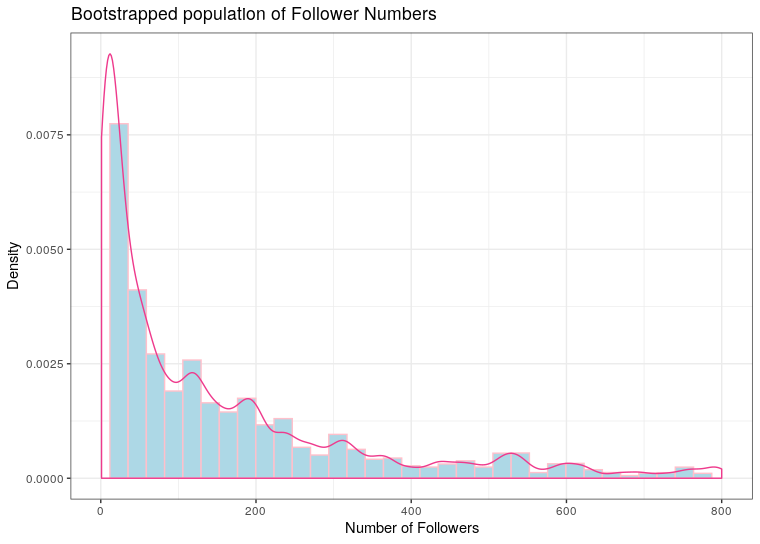

Analysing Twitter for Ubisoft
Table of Contents
1 8.1 Analysing the Relationship Between Friends and Followers for Twitter Users
1.1 8.1.1 Retrieve the posts from Twitter
relevant posts can be retrieved from twitter by utilising the rtweet package, packages can be loaded for use in R thusly:
# Load Packages ----------------------------------------------------------- setwd("~/Dropbox/Notes/DataSci/Social_Web_Analytics/SWA-Project/scripts/") if (require("pacman")) { library(pacman) } else{ install.packages("pacman") library(pacman) } pacman::p_load(xts, sp, gstat, ggplot2, rmarkdown, reshape2, ggmap, parallel, dplyr, plotly, tidyverse, reticulate, UsingR, Rmpfr, swirl, corrplot, gridExtra, mise, latex2exp, tree, rpart, lattice, coin, primes, epitools, maps, clipr, ggmap, twitteR, ROAuth, tm, rtweet, base64enc, httpuv, SnowballC, RColorBrewer, wordcloud, ggwordcloud, tidyverse, boot)
The rtweet API will search for tweets that contain all the words of a query
regardless of uppercase or lowercase usage 1.
In order to leverage the Twitter API it is necessary to use tokens provided through a Twitter developer account:
# Set up Tokens =========================================================== options(RCurlOptions = list( verbose = FALSE, capath = system.file("CurlSSL", "cacert.pem", package = "RCurl"), ssl.verifypeer = FALSE )) setup_twitter_oauth( consumer_key = "*************************", consumer_secret = "**************************************************", access_token = "**************************************************", access_secret = "*********************************************" ) # rtweet ================================================================== tk <- rtweet::create_token( app = "SWA", consumer_key = "*************************", consumer_secret = "**************************************************", access_token = "**************************************************", access_secret = "*********************************************", set_renv = FALSE
and hence all tweets containing a mention of Ubisoft can be returned and saved to disk as shown in listing 3:
n <- 1000 tweets.company <- search_tweets(q = 'ubisoft', n = n, token = tk, include_rts = FALSE) save(tweets.company[,], file = "resources/Download_1.Rdata")
1.2 8.2.2 Count of Followers and Friends
In order to identify the number of users that are contained in the tweets the
unique() function can be used to return a vector of names which can then be passed as an index to the vector of counts as shown in listing 4, this provides that 81.7% of the tweets are by unique users.
(users <- unique(tweets.company$name)) %>% length() x <- tweets.company$followers_count[duplicated(tweets.company$name)] y <- tweets.company$friends_count[duplicated(tweets.company$name)] ## > [1] 817
1.3 8.1.3 Summary Statistics
The average number of friends and followers from users who posted tweets mentioning Ubisoft can be returned using the mean() as shown in listing 5
this provides that on average each user has 586 friends and 63,620 followers.
x<- rnorm(090) y<- rnorm(090) (xbar <- mean(x)) (ybar <- mean(y)) ## > [1] 4295.195 ## > [1] 435.9449
1.4 8.1.4 Above Average Followers
Each user can be compared to the average number of followers, by using a logical
operator on the vector (e.g. y > ybar), this will return an output of logical
values. R will coerce logicals into 1/0 values meaning that the mean value
will return the proportion of TRUE responses as shown in listing 6. This
provides that 20.6% of the users identified have above average friend counts, while only 2.4% have an above average numbmer of followers.
(px_hat <- mean(x>xbar)) (py_hat <- mean(y>ybar)) ## > [1] 0.0244798 ## > [1] 0.2729498
1.5 8.1.5 Generate a bootsrap distribution of the Follower Counts
A bootstrap assumes that the population is an infinitely large repetition of the
sample, a bootstrap of the follower counts can be produced by resampling with
replacement/repetition and plotted using the ggplot2 library as shown in
listing 7 and figure 1.
This shows that the population follower counts is a non-normal skew-right distribution, which is expected because the number of friends is an integer value bound by zero 2.
## Resample the Data kt_pop <- sample(x, size = 10^6, replace = TRUE) ## Make the Population bt_pop_data <- tibble("Followers" = bt_pop) ggplot(data = bt_pop_data, aes(x = Followers)) + geom_histogram(aes(y = ..density..), fill = "lightblue", bins = 35, col = "pink") + geom_density(col = "violetred2") + scale_x_continuous(limits = c(1, 800)) + theme_bw() + labs(x = "Number of Followers", y = "Density", title = "Bootstrapped population of Follower Numbers")

Figure 1: Histogram of the bootrapped population of follower counts